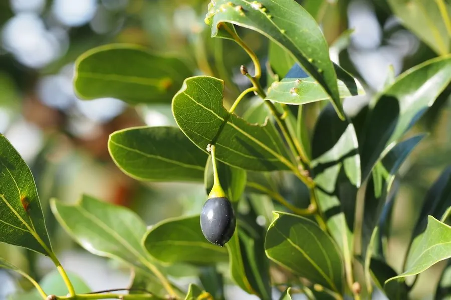

乔木 · 植物界
天竺桂 Cinnamomum japonicum

中国东部沿海与日本的常绿乔木，树皮与叶含芳香油，木材可供建筑，因野生资源稀少被列为国家保护植物。
- 分类
- 门被子植物门纲木兰纲目樟目科樟科属樟属
- 栖息环境
- 海拔 1000 米以下的沿海丘陵与山谷，喜温暖湿润
- 地理分布
- 中国江苏、浙江、福建、台湾沿海及日本、朝鲜半岛
- 保护级别
- 暂无评估；中国国家二级保护野生植物
物种志
天竺桂为常绿乔木，高可达 15 m，树皮灰褐色、平滑；叶片对生或近对生，卵状长圆形，革质，表面深绿光亮，揉碎后有香气。花期 4–5 月，伞形花序腋生，花小、黄绿色；果实为浆果状核果，椭圆形，成熟时暗紫色，基部具宿存花被。
天竺桂分布于中国江苏、浙江、福建、台湾沿海及日本、朝鲜半岛，喜温暖湿润、光照充足，适宜深厚肥沃的酸性土壤。树皮与叶片含芳香油，可提取作香料；木材纹理直、耐腐，可供建筑、家具与细木工用；树冠浓密、四季常青，也是优良的园林树种。由于长期采伐与生境破坏，野生天竺桂资源稀少，已被列为国家二级保护野生植物。
形态与习性
- 株高可达 15 m，树皮灰褐色平滑
- 花期4–5 月，伞形花序腋生
- 果期10–11 月，核果暗紫色
- 光照喜光，幼树耐阴
- 土壤深厚肥沃的酸性壤土
- 主要用途建筑与家具用材、芳香油、园林绿化
趣味知识
- 天竺桂的叶与树皮含芳香油，揉碎后有类似桂皮的香气。
- 天竺桂树冠浓密、四季常青，是江南沿海常见的园林与行道树。
- 野生天竺桂资源稀少，已被列为国家二级保护野生植物。